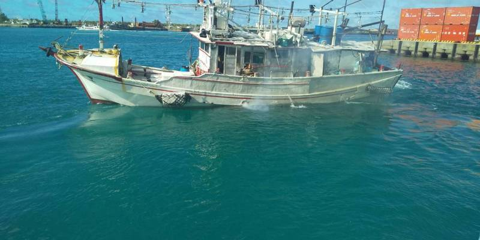

近月相继发生基隆籍「福洋266号」渔船、宜兰籍「富申号」渔船，因被指越界捕捞，遭日本扣押，在缴款后才得以放人放船。对此，中国外交部9日罕见对此发布「发言人答记者问」，表示据《中日渔业协定》，日方无权在有关水域对「中方渔船」采取执法措施，已向日方提出严正交涉，要求其立即纠正错误做法。
据中国外交部官网，9日晚间发布外交部发言人就「近期日本抓扣台湾渔船」答记者问，首先就指出，「中国政府高度重视维护包括台湾地区在内的中国渔民合法利益。」
中国外交部发言人接著称，根据《中日渔业协定》，日方无权在有关水域对中方渔船采取执法措施。中方已向日方提出严正交涉，要求其立即纠正错误做法，并采取有效措施防止类似事件再次发生。
7月初，基隆八斗子籍「福洋266号」渔船疑越界到日本海域捕捞，遭日本海上保安厅公务船登检，船上8人和渔船都被扣押接受调查；后在同个月底，又发生宜兰苏澳籍「富申号」渔船，也疑因越界捕鱼，遭日本扣押8名台籍船员和船只。两起案件的人、船都在被日方要求缴交罚款或担保今后才被放回。